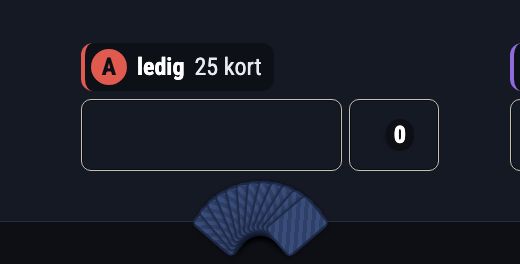
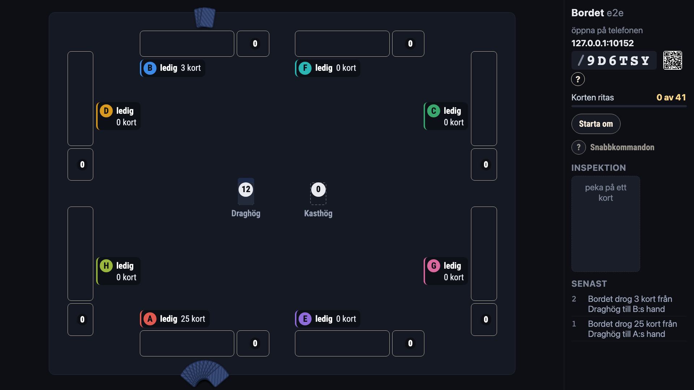
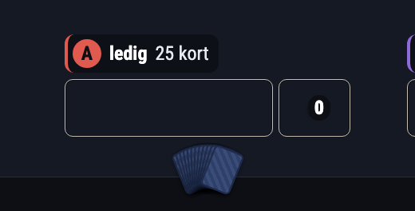
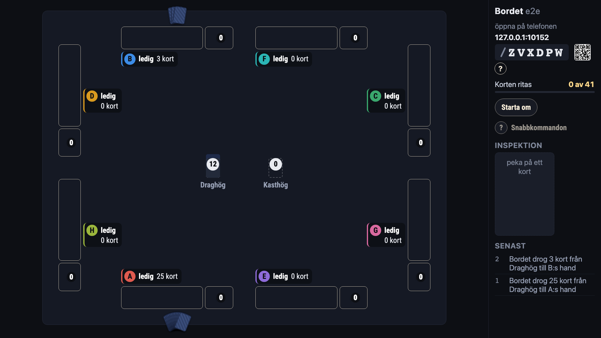
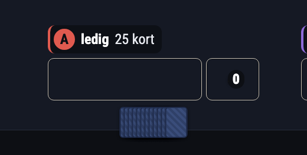
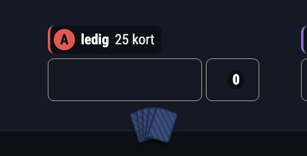
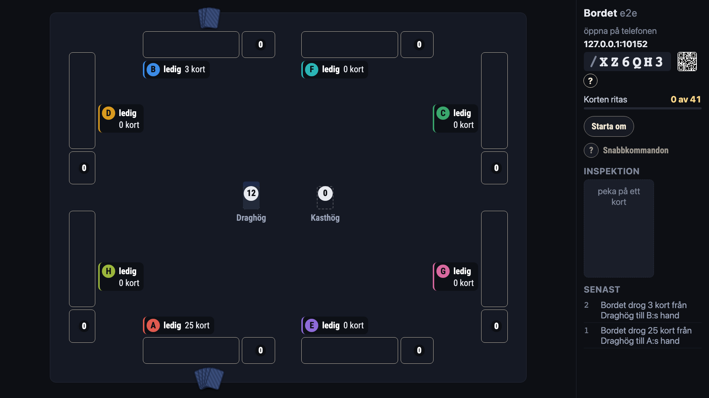

Handen på TV:n med många kort (#766)
Den byggda appen vid 1920 × 1080, åtta platser, 25 kort på A:s hand och 3 på B:s. Siffran är hur långt handen hänger ut över filtens kant. Ingen av de tre ryms helt innanför filten: handen är förankrad mot kanten med flit (#84, så att den inte ligger i «Framför»), och även en rak remsa hänger 15 px utanför. Att få in den helt är en fråga om var handen står, inte om formen.
I dag
Tolv baksidor i en solfjäder på ±50°; 38 px hänger ut över filtens kant. Den klipps inte längre av skärmens nederkant (det gjorde den i speltestet), men ligger på ramen.


A — samma solfjäder, med taket på vridningen (rekommenderad)
Hur många kort handen än har vrids solfjädern högst ±22°: den växer inte med antalet, och överhänget går från 38 till 24 px. Handen ser ut som en hand, och plattan säger hur många.


B — en rak remsa
Baksidorna läggs omlott i en rak rad. Lägst överhäng, 15 px, men det ser ut som en hög snarare än en hand.

C — högst fem baksidor
En liten solfjäder på fem kort oavsett antal; plattan säger 25. Ungefär lika lågt som A, men fem kort och 25 kort ser likadana ut.

